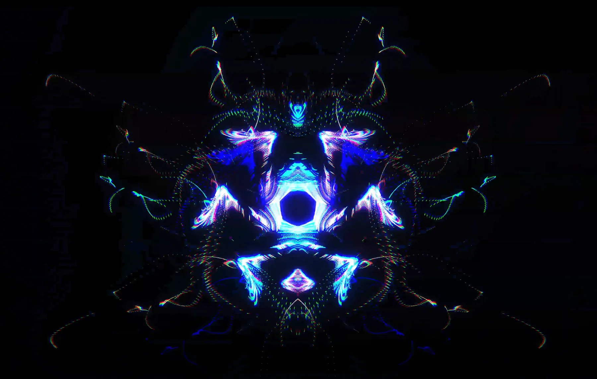
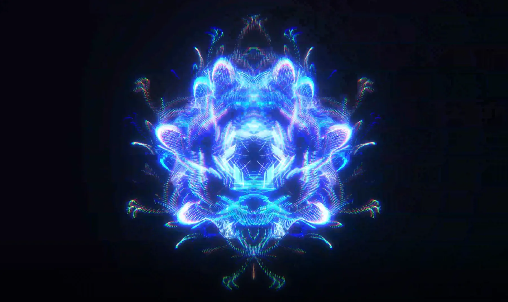
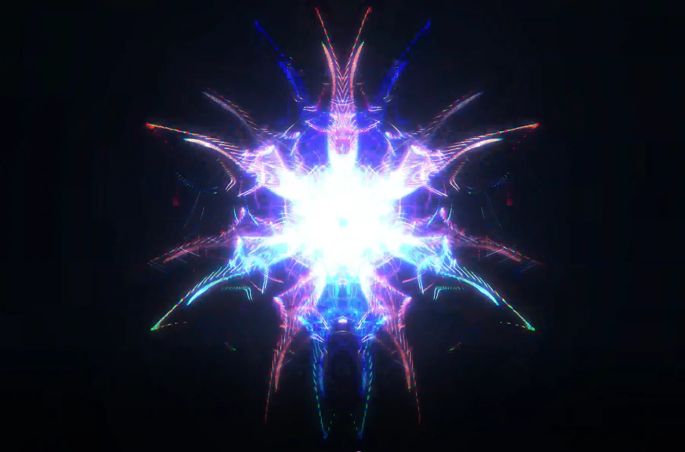
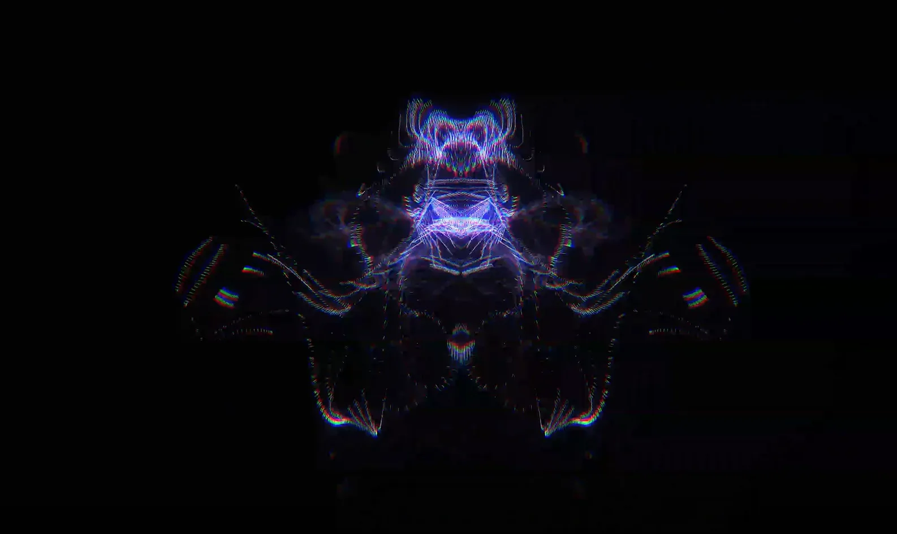
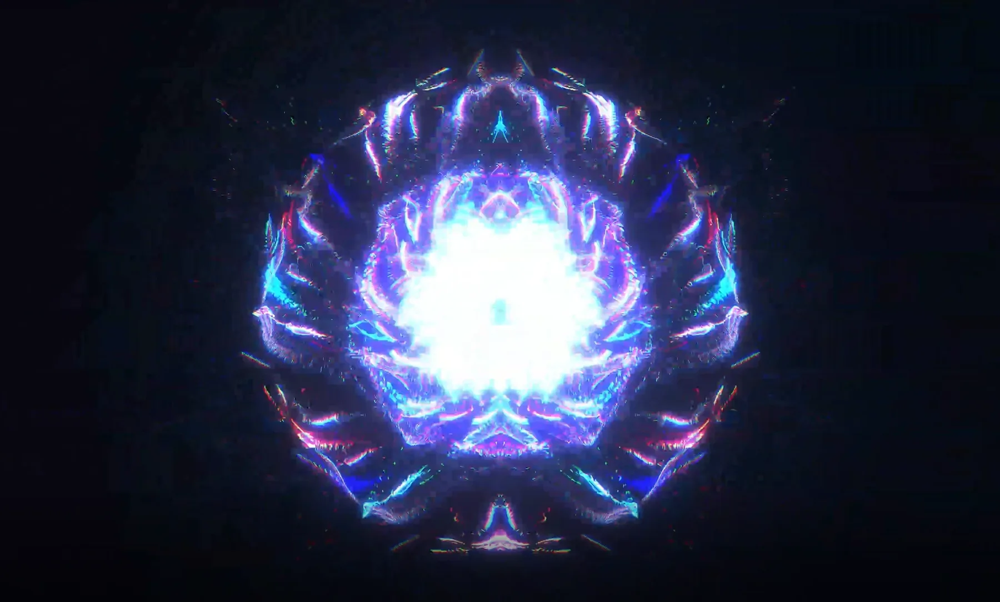
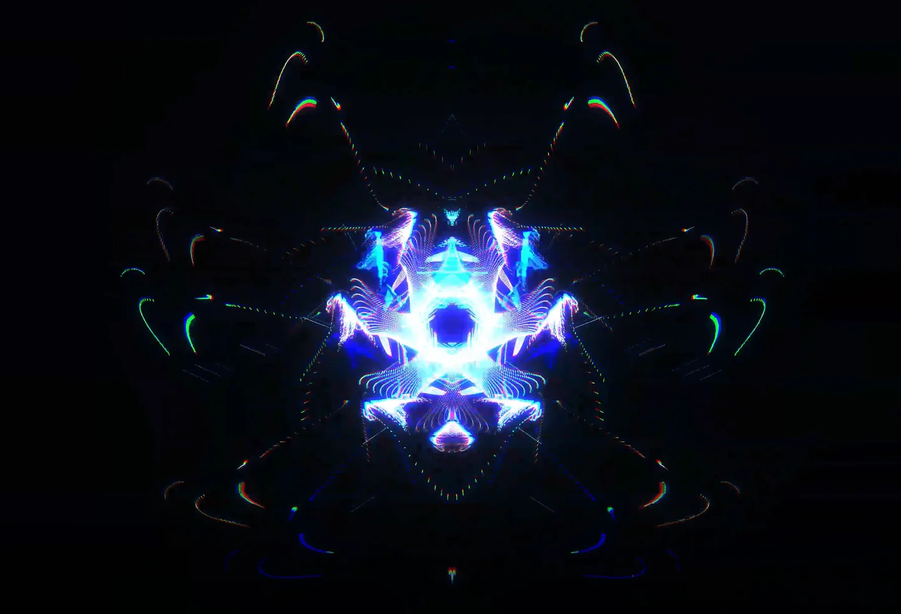
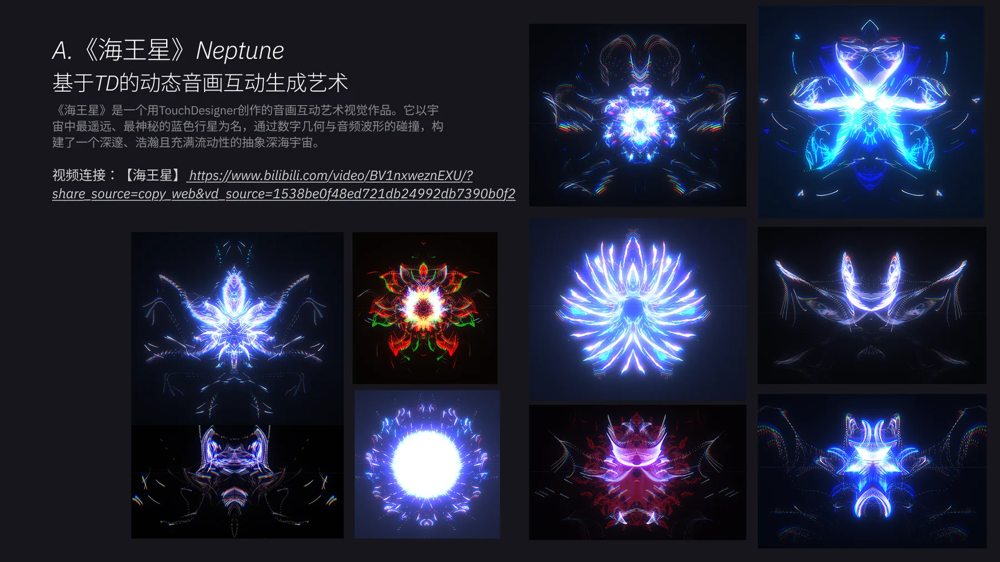

《海王星》Neptune
基于 TouchDesigner 的音频互动生成艺术
 观看视频
观看视频
《海王星》· 音画互动演示
原站视频/B 站音频可视化
旧版项目记录
一、作品呈现
B 站视频《Neptune》_哔哩哔哩_bilibilibilibili.com ↗





二、作品简介
《海王星》Neptune是一个基于TD的动态音画互动生成艺术（即VJ）
概念简介：
引言：
《海王星》是一个用TouchDesigner创作的音画互动艺术视觉作品。它以宇宙中最遥远、最神秘的蓝色行星为名，通过数字几何与音频波形的碰撞，构建了一个深邃、浩瀚且充满流动性的抽象深海宇宙。

设计概念：
本设计旨在利用TouchDesigner的实时处理能力，将抽象的音频信号转化为具象的视觉波形，创造出一个超越现实的深海宇宙。设计核心在于：
- 几何与波形的共生：将音乐的节奏、频率和响度转化为复杂的数字几何体。光线的流动和形态的变幻不仅是视觉上的呈现，更是听觉在视觉上的延伸。
- 深邃的色彩与触感：通过蓝色、紫色等冷色调，以及流动的纹理，营造出一个深邃、神秘的海王星世界。光线的流动如同时空的涟漪，让人感受到一种穿越时空的深邃感。
- 互动的感官体验：观众可以通过声音的变化来影响视觉的呈现，创造出一种沉浸式的互动体验。这种体验不仅是视觉上的，更是情感上的，让观众感受到一种与宇宙、与深海的连接。